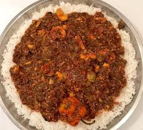

Soupe Kandia

Description
African seafood and okra soup from the African country of Senegal is a traditional African food recipe.
Ingredients
- 24 mussels (or frozen on the half-shell)
- 3 quarts fish or vegetable stock
- 3 bay leaves
- 2 medium yellow onions, roughly chopped
- 3 or 4 tablespoons fish sauce (as a substitute for fermented conch called “yeett”)
- 1 Scotch bonnet
- 16 medium shrimp, peeled and deveined
- 8 oz lump crabmeat, picked over for any shells
- 6 tablespoons palm oil
- 8 cups thinly-sliced okra
- Freshly ground black pepper, to taste
- Cooked fonio or rice, to serve
Steps
- If using fresh mussels: place the mussels in a colander in the sink under running water. Scrub with a clean brush to remove grit. Gently try to close any open mussels with your fingers or gently tap the open mussels on a counter; discard any that do not close. Sometimes, the mussel comes with a “beard.” To remove it, grab it with your fingers and pull it out. You can also use a knife.
- Bring the stock to a boil in a 6 quart saucepan over high heat, then add the bay leaves and onions. Reduce the heat to medium-low, and cook until the stock has reduced by one-quarter, about 20 minutes.
- Add the fish sauce and the chiles to the broth. Cook, stirring occasionally, for 10 minutes.
- Add the mussels and shrimp. Cover the pan and cook until the mussels open and shrimp are cooked through, about 4 minutes. Discard any mussels that have not opened by this time.
- Add the crabmeat and palm oil. Cook for approximately 2 more minutes.
- Add okra and stir once. Cook at a simmer for 10 more minutes.
- To serve, ladle the soup into bowls and serve over fonio or rice.